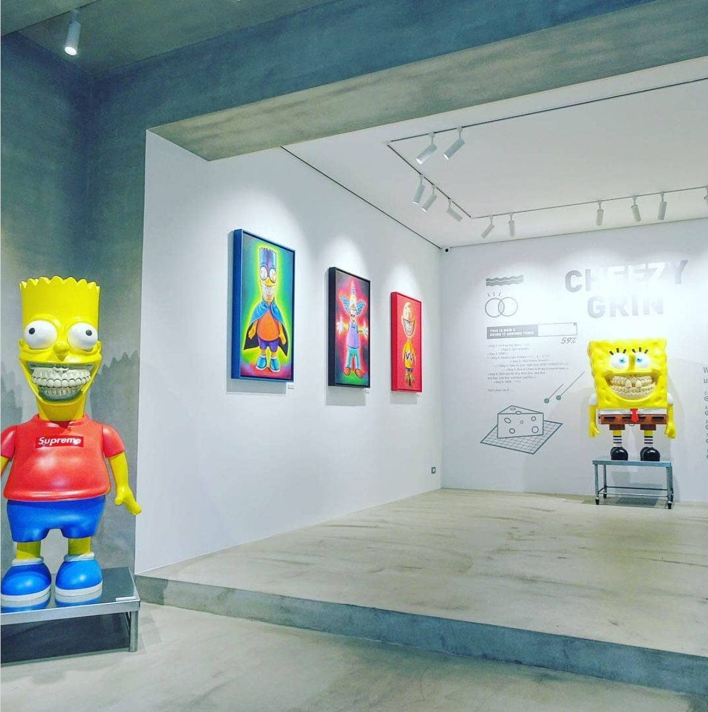

Exhibitions
Pop’N Lab: Ron English Solo Exhibition, Dopeness Art Lab, Taipei City, Taiwan, September 22–October 30, 2018.
Notes
This work references Bart Simpson from The Simpsons.
Ron's Personal Photo Archive

Ancillary Documentation

Pop’N Lab: Ron English Solo Exhibition, Dopeness Art Lab, Taipei City, Taiwan, September 22–October 30, 2018.
This work references Bart Simpson from The Simpsons.
